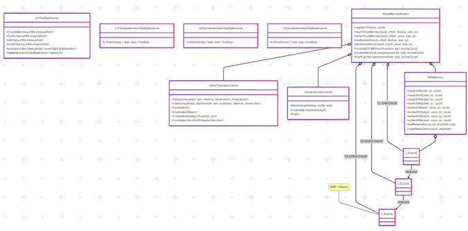

|
<< Click to Display Table of Contents >> Navigation: Introduction > Platform Architectures > Alpha on ASA-EmulatR > Virtual Address Space — Overview > Memory Management > Caching |
The cache hierarchy can dramatically improve performance by reducing memory access latency.
The ASA-EMulatR should support two emulated caches:
1.a Level 1 - which is a private UnifiedDataCache
2.Level II - which is created by AlphaSMPManager. Because the AlphaSMPManager hands out the same UnifiedDataCache*, all CPUs end up referencing a single object. The internal QReadWriteLock in UnifiedDataCache protects against concurrent accesses, so multiple SMP threads can safely read/write the same cache lines.
Recommended Setup Guidelines
Cache Level |
Line Size (default = 64 bytes) |
Assoc (default=4-way) |
Sets (default=256 bytes) |
Total Size (Calculated) |
|---|---|---|---|---|
L1-I / L1-D |
64B |
4-way |
64–512 |
16–128 KB |
L2 |
64B–128B |
8-way |
1K–2K |
512KB–1MB |
L3 |
128B |
16-way |
8K–32K |
4MB–16MB |
Example:
lineSize = 64
associativity = 4
numSets = 256
Calculated as: totalCacheSize = 64 * 4 * 256 = 65536 bytes = 64 KB
Tuning:
Optionally tune cache size, associativity, and line size for instruction-specific workloads.
ARCHITECTURE:
CPU -> L1 Cache -> L2 Cache -> L3 Cache -> AlphaMemorySystem -> SafeMemory
(32KB) (1MB) (8MB) (translation) (RAM)
Cache Hierarchy Integration
•L1 I-Cache: Private to FetchUnit for instruction fetching
•L2 D-Cache: Private to ExecuteStage for data operations
•Performance may differ from real hardware. Real SMP systems usually give each core its own L1 data cache plus a shared higher-level cache; this model skips the per-core L1 entirely.
•L3 Shared (SMP) UnifiedCache : Shared across CPUs, handles L1 misses. Coherency is implicit. Any modification a CPU makes to a cached line is immediately visible to the others because they share the same backing storage.
•Cache Coherency: MESI-like protocol with invalidation signals between CPUs

The Alpha Architecture cache is expected to adhere to the following application cycle:
1.Cache Creation: Use a self-managed scoped-pointer to ensure type/memory safety while managing cache lifecycles.
2.Memory Operation Replacement: All readMemory* and writeMemory* methods must go through cache hierarchy. Flowing through the cache interfaces ensures can be fetched, decoded, executed or fetch, (already decoded), executed.
3.Cache Hierarchy Setup: L1→L2→L3 connections are established during initialization
4.Instruction Fetch Integration: Fetch units use instruction cache, not direct memory
5.Cache Coherency: Invalidation/flush operations must actually affect cache state
Performance Impact: (estimated)
•L1 Hit: 1-2 CPU cycles
•L2 Hit: 10-20 CPU cycles
•L3 Hit: 40-100 CPU cycles
Memory Miss: 200-400 CPU cycles
CACHE OPERATION FLOW:
READ Operation:
1.CPU requests data at virtual address
2.Translate VA -> PA using TLB/MMU
3.Check L1 Data Cache for PA
a.HIT: Return data immediately
b.MISS: Go to step 4
4.Check L2 Unified Cache for PA
a.HIT: Load into L1, return data
b.MISS: Go to step 5
5.Check L3 Shared Cache for PA
a.HIT: Load into L2->L1, return data
b.MISS: Go to step 6
6.Fetch from main memory (SafeMemory)
a.Load into L3->L2->L1, return data
WRITE Operation:
1.CPU writes data to virtual address
2.Translate VA -> PA using TLB/MMU
3.Write to L1 Data Cache (mark dirty)
4.Send invalidation to other CPUs
5.Eventually write-back dirty lines to L2->L3->Memory
INSTRUCTION FETCH:
1.CPU fetches instruction at PC
2.Translate VA -> PA using TLB/MMU
3.Check L1 Instruction Cache
a.HIT: Return instruction
b.MISS: Check L2->L3->Memory, load into L1I
CACHE COHERENCY:
1.CPU1 writes to address X
2.CPU1's L1 cache is updated
3.Invalidation message sent to all other CPUs
4.Other CPUs invalidate their copies of address X
5.Next access by other CPUs will miss and fetch fresh data
Reference:
AlphaInstructionCache Caching-Code Code-3 L1 I-Cache L2 D-Cache L3 Shared (SMP) UnifiedCache Translation Lookaside Buffer (TLB)